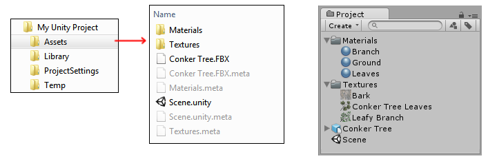

Behind the Scenes
Unity automatically imports assets and manages various kinds of additional data about them for you, such as what import settings should be used to import the asset, and where the asset is used throughout your project. Below is a description of how this process works.
What happens when Unity imports an Asset?
1. A Unique ID is assigned
When you place an Asset such as a texture in the Assets folder, Unity will first detect that a new file has been added (the editor frequently checks the contents of the Assets folder against the list of assets it already knows about).
The first step Unity takes is to assign a unique ID to the asset. This ID is used internally by Unity to refer to the asset which means the asset can be moved or renamed without references to the asset breaking.
2. A .meta file is created

You'll notice in the image above that there are .meta files listed in the file system for each asset and folder created within the Assets folder. These are not visible in Unity's Project Window. Unity creates these files for each Asset, but they are hidden by default, so you may not see them in your Explorer/Finder either. You can make them visible by selecting the Mode setting to Visible Meta Files on the Editor window (main menu: Edit > Project Settings, then select the Editor category, and navigate to the Version Control section).
The ID that Unity assigns to each Asset is stored inside the .meta file which Unity creates alongside the asset file itself. This .meta file must stay with the asset file it relates to.
Important: .meta files must match and stay with their respective Asset files. If you move or rename an asset within Unity's own Project window, Unity will also automatically move or rename the corresponding .meta file. If you move or rename an asset *outside of Unity (i.e. in Windows Explorer, or Finder on the Mac), you must move or rename the .meta file to match.
If an asset loses its meta file (for example, if you moved or renamed the asset outside of Unity, without moving/renaming the corresponding .meta file), any reference to that asset will be broken. Unity would generate a new .meta file for the moved/renamed asset as if it were a brand new asset, and delete the old "orphaned" .meta file.
For example, in the case of a texture asset losing its .meta file, any Materials which used that Texture will now have no reference to that texture. To fix it you would have to manually re-assign that texture to any materials which required it.
In the case of a script asset losing its .meta file, any Game Objects or Prefabs which had that script assigned would end up with an "unassigned script" component, and would lose their functionality. You would have to manually re-assign the script to these objects to fix this.
3. The source asset is processed
Unity reads and processes any files that you add to the Assets folder, converting the contents of the file to internal game-ready versions of the data. The actual asset files remain unmodified, and the processed and converted versions of the data are stored in the project's Library folder.
Using internal formats for assets allows Unity to have game-ready versions of your assets ready to use at runtime in the editor, while keeping your unmodified source files in the the assets folder so that you can quickly edit them and have the changes automatically picked up by the editor. For example, the Photoshop file format is convenient to work with and can be saved directly into your Assets folder, but hardware such as mobile devices and PC graphics cards can't accept that format directly to render as textures. All the data for Unity's internal representation of your assets is stored in the Library folder which can be thought of as similar to a cache folder. As a user, you should never have to alter the Library folder manually and attempting to do so may affect the functioning of the project in the Unity editor. However, it is always safe to delete the Library folder (while the project is not open in Unity) as all its data is generated from what is stored in the Assets and ProjectSettings folders. This also means that the Library folder should not be included in version control.
Sometimes multiple assets are created from an import
Some asset files can result in multiple assets being created. This can occur in the following situations:
A 3D file, such as an FBX, defines Materials and/or contains embedded Textures.
In this case, the defined Materials and embedded textures are extracted and represented in Unity as separate assets.An image file imported as multiple sprites.
It's possible to define multiple sprites from a single graphic image, by using Unity's Sprite Editor. In this case, each sprite defined in the editor will appear as a separate Sprite asset in the Project window.A 3D file contains multiple animation timelines, or has multiple separate clips defined within its animation import settings.
In this situation, the multiple animation clips will appear as separate Animation Clip assets in the project window.
The import settings can alter the processing of the asset
As well as the unique ID assigned to the asset, the meta files contain values for all the import settings you see in the inspector when you have an asset selected in your project window. For a texture, this includes settings such as the Texture Type, Wrap Mode, Filter Mode and Aniso Level.
If you change the import settings for an asset, those changed settings are stored in the .meta file accompanying the asset. The asset will be re-imported according to your new settings, and the corresponding imported "game-ready" data will be updated in the project's Library folder.
When backing up a project, or adding a project to a Version Control Repository, you should include the main Unity project folder, containing both the Assets and ProjectSettings folders. All the information in these folders is crucial to the way Unity works. You should omit the Library and Temp folders for backup purposes.
Note: Projects created in Unity 4.2 and earlier may not have .meta files if not explicitly enabled. Deleting the Library folder in these projects will lead to data loss and permanent project corruption because both the generated internal formats of your assets **and* the meta data were stored in the Library folder.*